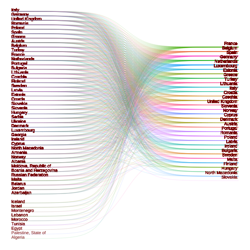
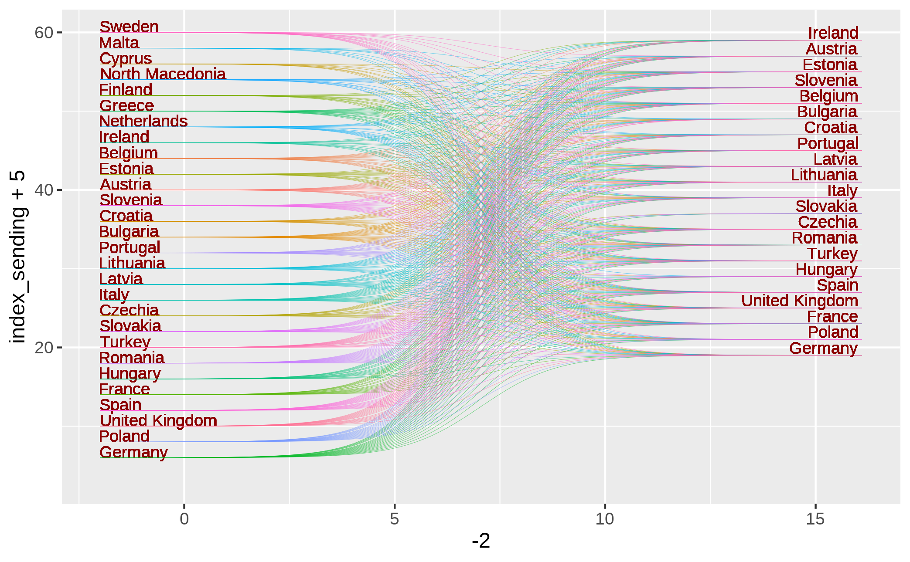
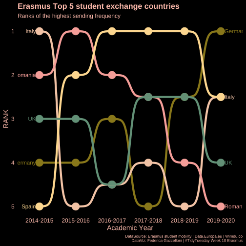
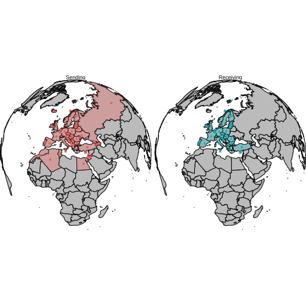

Erasmus students exchange
By Federica Gazzelloni
March 15, 2022
Overview
This week 10 of #TidyTuesday 2022 theme is #Erasmus students exchange in the European countries.
The data set is from Erasmus student mobility, Data.Europa.eu and Wimdu.co to discover the most popular Erasmus destinations.
The idea is to make a network of sending and receiving countries, let’s have a look at the data.
if(!require(pacman)) install.packages("pacman")
pacman::p_load(tidyverse, ggbump, cowplot, wesanderson)
erasmus <- readr::read_csv('https://raw.githubusercontent.com/rfordatascience/tidytuesday/master/data/2022/2022-03-08/erasmus.csv')
The set is made of information about students, such as the age, the nationality, the lenght of stay, the gender, academic year, and others. I selected some of them, to extract the information I needed to make the network.
df <- erasmus%>%
select(sending_country_code,receiving_country_code,
participant_nationality,participants,
participant_age,
academic_year,mobility_duration,
participant_gender)
kableExtra::kable(head(df))
| sending_country_code | receiving_country_code | participant_nationality | participants | participant_age | academic_year | mobility_duration | participant_gender |
|---|---|---|---|---|---|---|---|
| AT | AT | AT | 2 | 13 | 2014-2015 | 1 | Female |
| AT | AT | AT | 3 | 14 | 2014-2015 | 1 | Female |
| AT | AT | AT | 3 | 15 | 2014-2015 | 1 | Female |
| AT | AT | AT | 4 | 14 | 2014-2015 | 1 | Male |
| AT | AT | AT | 2 | 15 | 2014-2015 | 1 | Male |
| AT | AT | AT | 2 | 15 | 2014-2015 | 1 | Male |
Looking at the participant_age we see that we have some misleading data:
df %>% pull(participant_age) %>% summary()
Min. 1st Qu. Median Mean 3rd Qu. Max.
-7184.00 17.00 21.00 24.54 28.00 1049.00
For this reason the best way is to filter students between 17 and 28 years old. Also, mobility_duration is quite surprising:
df %>% pull(mobility_duration) %>% summary()
Min. 1st Qu. Median Mean 3rd Qu. Max.
1.000 1.000 1.000 2.351 3.000 273.000
The median value of the students' stay is ONE day, while the mean is just a little above TWO days. Very few students stay more than 10 days, but someone reaches a max of 273 days (39 weeks).
df %>% count(mobility_duration) %>% mutate(perc = round(n/sum(n)*100,2)) %>% head()
# A tibble: 6 × 3
mobility_duration n perc
<dbl> <int> <dbl>
1 1 88142 53.5
2 2 20942 12.7
3 3 25343 15.4
4 4 10547 6.41
5 5 8177 4.97
6 6 4364 2.65
df %>% count(mobility_duration) %>% mutate(perc = round(n/sum(n)*100,3)) %>% tail()
# A tibble: 6 × 3
mobility_duration n perc
<dbl> <int> <dbl>
1 163 1 0.001
2 177 2 0.001
3 201 3 0.002
4 212 24 0.015
5 266 2 0.001
6 273 1 0.001
Student participants are almost all solo participants as the median shows to be ONE student per observation, TWO students on average, with a max value of 279. So that, to have a picture of the phenomenon select the average value of the student participants as representative.
df %>% pull(participants) %>% summary(participants)
Min. 1st Qu. Median Mean 3rd Qu. Max.
1.000 1.000 1.000 1.881 2.000 279.000
Finally, gender, Females are slightly more than males, just a little above 50%.
tbl <-df %>% pull(participant_gender) %>% table()
cbind(n=tbl,pct=round(prop.table(tbl)*100,2))
n pct
Female 88452 53.73
Male 75602 45.92
Undefined 581 0.35
This is our new dataset on which we will build our network.
df <- df %>%
group_by(academic_year) %>%
filter(between(x = participant_age,17,28),
mobility_duration>3) %>%
summarise(m_participants=mean(participants),
sending_country_code,receiving_country_code,
participant_gender,.groups="drop") %>%
ungroup() %>%
select(-m_participants) %>%
distinct()
kableExtra::kable(head(df))%>%
kable_styling(latex_options = "scale_down")
Error in kable_styling(., latex_options = "scale_down"): could not find function "kable_styling"
At this point I’d like to have the full country’s name, and use {ISOcodes} package. I do that because I’d like to make a spatial visualization as well. The package contains the values for the countries' abbreviations coded as “Alpha_2”. I needed to adjust UK and Greece. To verify this you might need to use the count() function and the str_detect() a couple of times before identifying all the values that needs an adjustment.
library(ISOcodes)
isocodes<-ISOcodes::ISO_3166_1
isocodes2 <- isocodes%>%
mutate(Alpha_2=case_when(Alpha_2=="GB"~"UK",
Alpha_2=="GR"~"EL",
TRUE ~ Alpha_2))
Some more manipulations for selecting just the countries in the dataset.
sending_country_code <- df %>% count(sending_country_code) %>% select(-n) %>% unlist()
receiving_country_code <- df %>% count(receiving_country_code) %>% select(-n) %>% unlist()
sending <- isocodes2 %>% filter(Alpha_2 %in% sending_country_code)
receiving <- isocodes2 %>% filter(Alpha_2 %in% receiving_country_code)
sending_unlst <- sending %>% count(Name) %>% select(-n) %>% unlist()
receiving_unlst <- receiving %>% count(Name) %>% select(-n) %>% unlist()
{ggplot2} package provides spatial data, as you might notice, students of the Erasmus programs come from all over the World. Still, some countries' name adjustments are needed.
world <- map_data("world")%>%
filter(!region=="Antarctica")%>%
mutate(region=case_when(region=="UK"~ "United Kingdom",
region=="Czech Republic"~"Czechia",
region=="Moldova"~"Moldova, Republic of",
region=="Palestine"~"Palestine, State of",
region=="Russia" ~ "Russian Federation",
TRUE ~ region))
sending_geo <- world %>% filter(region %in% sending_unlst)
sending_geo_full <- sending %>%
select(Alpha_2,Name) %>%
left_join(sending_geo,by = c("Name"="region"))
receiving_geo <- world %>% filter(region %in% receiving_unlst)
receiving_geo_full <- receiving %>%
select(Alpha_2,Name) %>%
left_join(receiving_geo,by = c("Name"="region"))
Then finally, make the centroids. We will use this in the visualization further below.
sending_geo_centroids <- sending_geo_full %>%
group_by(Name) %>%
mutate(avg_long = mean(range(long)),avg_lat = mean(range(lat))) %>%
count(Alpha_2,Name,avg_long,avg_lat)
receiving_geo_centroids <- receiving_geo_full %>%
group_by(Name) %>%
mutate(avg_long = mean(range(long)),avg_lat = mean(range(lat))) %>%
count(Alpha_2,Name,avg_long,avg_lat)
df2 is our new data set, made of countries' names and spatials:
df2 <- df %>%
left_join(sending_geo_centroids,by=c("sending_country_code"="Alpha_2")) %>%
left_join(receiving_geo_centroids,by=c("receiving_country_code"="Alpha_2")) %>%
rename(sending_country_name=Name.x,receiving_country_name=Name.y,
avg_long_s=avg_long.x,avg_lat_s=avg_lat.x,
avg_long_r=avg_long.y,avg_lat_r=avg_lat.y)%>%
select(-n.x,-n.y)
df2 %>% head
# A tibble: 6 × 10
academic_year sending_country_code receiving_country_code participant_gender
<chr> <chr> <chr> <chr>
1 2014-2015 RS BG Male
2 2014-2015 BG BG Female
3 2014-2015 ES BG Female
4 2014-2015 BG BG Male
5 2014-2015 EL BG Female
6 2014-2015 EL BG Male
# … with 6 more variables: sending_country_name <chr>, avg_long_s <dbl>,
# avg_lat_s <dbl>, receiving_country_name <chr>, avg_long_r <dbl>,
# avg_lat_r <dbl>
order_sending and order_receiving will be very useful for a third visualization in which all the sending countries will be matched with students' destinations. We will see this further below.
order_sending <- df2%>%
count(sending_country_name,sort=TRUE)%>%
mutate(index_sending=seq(1,length(sending_country_name),1),
index_sending=rev(index_sending))%>%
drop_na()
order_receiving <- df2%>%
count(receiving_country_name,sort=TRUE)%>%
mutate(index_receiving=seq(1,length(receiving_country_name),1),
index_receiving=rev(index_receiving))%>%
drop_na()
And here is the data set that we will use to make the rank network:
erasmus_network <- df2 %>%
select(academic_year,
sending_country_name,receiving_country_name) %>%
distinct() %>%
left_join(order_sending,by="sending_country_name") %>%
left_join(order_receiving,by="receiving_country_name") %>%
mutate(group = glue::glue("{sending_country_name}-{receiving_country_name}")) %>%
distinct() %>%
drop_na() %>%
arrange(index_sending) %>%
mutate(year_id=case_when(academic_year=="2014-2015"~1,
academic_year=="2015-2016"~2,
academic_year=="2016-2017"~3,
academic_year=="2017-2018"~4,
academic_year=="2018-2019"~5,
academic_year=="2019-2020"~6)) %>%
relocate(year_id) %>%
arrange(year_id)
erasmus_network %>% head
# A tibble: 6 × 9
year_id academic_year sending_country_na… receiving_count… n.x index_sending
<dbl> <chr> <chr> <chr> <int> <dbl>
1 1 2014-2015 Morocco Greece 5 5
2 1 2014-2015 Israel Greece 6 8
3 1 2014-2015 Iceland Norway 8 9
4 1 2014-2015 Malta France 21 14
5 1 2014-2015 Moldova, Republic … France 28 17
6 1 2014-2015 Moldova, Republic … Poland 28 17
# … with 3 more variables: n.y <int>, index_receiving <dbl>, group <glue>
Load the packages for setting a nice font.
library(showtext)
library(sysfonts)
library(extrafont)
showtext::showtext_auto()
showtext::showtext_opts(dpi=320)
font_add_google(name="Noto Sans",family="notosans")
erasmus_network%>%
arrange(index_sending)%>%
ggplot()+
geom_text(aes(x = -2, y = index_sending+5, label = sending_country_name),
vjust=0,
hjust="left", color = "darkred", size = 3) +
ggbump::geom_sigmoid(aes(x = -2, xend = 16.1,
y = index_sending+5, yend =index_receiving+18,
group=factor(group),color=receiving_country_name),
alpha = .6, smooth = 10, size = 0.1,show.legend = F) +
geom_text(aes(x = 16, y = index_receiving+17.5, label = receiving_country_name),
vjust=-1.5, hjust="right", color = "darkred", size = 3) +
coord_cartesian()+
theme_void()

Or a simplified version:

Let’s select Top 5 sending countries:
erasmus_network2 <- erasmus_network %>%
filter(sending_country_name%in%c("Italy",
"Germany",
"United Kingdom",
"Romania","Spain")) %>%
mutate(sending_country_name=case_when(sending_country_name=="United Kingdom"~"UK",
TRUE~sending_country_name))%>%
count(year_id,academic_year,sending_country_name) %>%
group_by(academic_year)%>%
mutate(rank=rank(x=n))%>%
ungroup()
erasmus_network2 %>% head()
# A tibble: 6 × 5
year_id academic_year sending_country_name n rank
<dbl> <chr> <chr> <int> <dbl>
1 1 2014-2015 Germany 6 4
2 1 2014-2015 Italy 3 1
3 1 2014-2015 Romania 4 2
4 1 2014-2015 Spain 7 5
5 1 2014-2015 UK 5 3
6 2 2015-2016 Germany 14 4
library(ggthemes)
ggplot(erasmus_network2,
mapping=aes(academic_year,rank,
group=factor(sending_country_name),
color=factor(sending_country_name)))+
geom_point(size = 7) +
geom_text(data = erasmus_network2 %>% filter(year_id == min(year_id)),
aes(x = year_id - .1,
label = sending_country_name), size = 4, hjust = 1) +
geom_text(data = erasmus_network2 %>%
filter(year_id == max(year_id)),
aes(x = year_id + .1, label = sending_country_name),
size = 4, hjust = 0,check_overlap = T) +
geom_bump(size = 2, smooth = 8) +
labs(y = "RANK",
x = "Academic Year",
title="Erasmus Top 5 student exchange countries",
subtitle="Ranks of the highest sending frequency",
caption="DataSource: Erasmus student mobility | Data.Europa.eu | Wimdu.co\nDataViz: Federica Gazzelloni | #TidyTuesday Week 10 Erasmus") +
scale_y_reverse() +
scale_color_manual(values = wesanderson::wes_palette(5, name = "Royal2"))+
cowplot::theme_minimal_grid(font_size = 14, line_size = 0) +
theme(legend.position = "none",
panel.grid.major = element_blank(),
plot.title = element_text(color="#ffc7ba"),
plot.subtitle = element_text(color="#ffc7ba"),
plot.caption = element_text(color="#ffc7ba",size=8),
axis.text = element_text(color="#ffc7ba"),
axis.title = element_text(color="#ffc7ba"),
plot.background = element_rect(color="black",fill="black"),
panel.background = element_rect(color="black",fill="black"))

Here is the final part of this post, I set the spatials for making a map visualizaton of the sending to receiving countries.
sending_geo_full2<-sending_geo_full%>%mutate(direction="sending")
receiving_geo_full2<-receiving_geo_full%>%mutate(direction="receiving")
geo_full <-rbind(sending_geo_full2,receiving_geo_full2)
centr_s<- sending_geo_centroids%>%mutate(direction="Sending")
centr_r<- receiving_geo_centroids%>%mutate(direction="Receiving")
centroids<-rbind(centr_s,centr_r)%>%
mutate(direction=as.factor(direction))
levels(centroids$direction)<-c("Sending","Receiving")
geo_full2<- geo_full%>%
mutate(direction=as.factor(direction))
levels(geo_full2$direction)<-c("Receiving","Sending")
geo_full2$direction<-relevel(geo_full2$direction,ref="Sending")
ggplot(geo_full2)+
geom_polygon(data = world,
aes(x=long,y=lat,group=group),fill="grey78",color="grey5")+
geom_polygon(aes(x=long,y=lat,group=group,fill=direction),alpha=0.3)+
geom_point(data=centroids,
aes(x=avg_long, y=avg_lat,color=direction,shape=direction))+
coord_map("ortho", orientation = c(33.366449, 24.022840, 0))+
facet_wrap(vars(direction))+
scale_x_continuous("Latitude", expand=c(0,0)) +
scale_y_continuous("Longitude", expand=c(0,0)) +
theme_void()+
theme(legend.position = "none")

- Posted on:
- March 15, 2022
- Length:
- 7 minute read, 1402 words
- See Also: